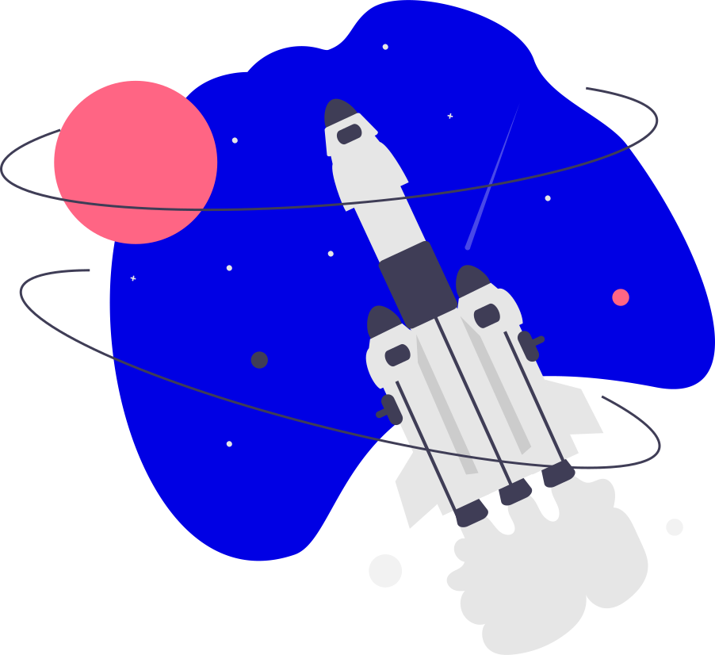
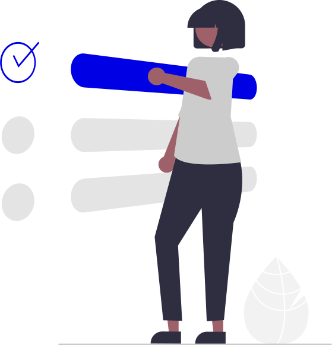
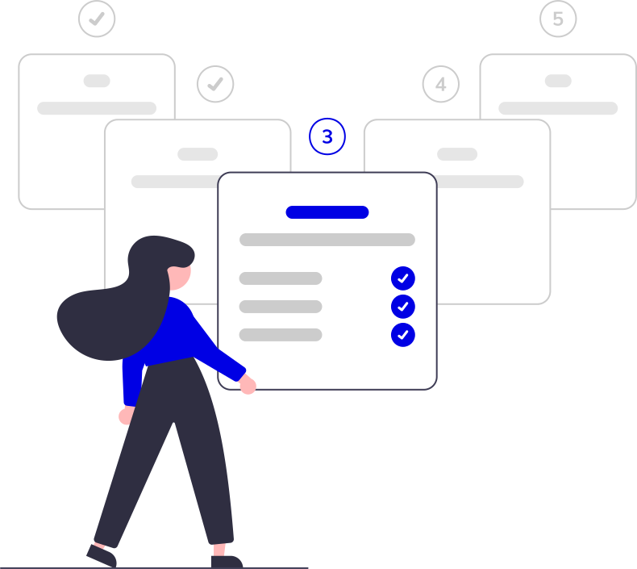

<div class="page p-4">
    <div class="row">
        <div class="col-1"></div>
        <div class="col-md-2 col-0">
            <div class="card submenu p-2 py-4">
                <ul class="list-group list-group-flush">
                    <li class="list-group-item">Get Started</li>
                    <li class="list-group-item features" type="button" data-target="#features" data-toggle="collapse" aria-expanded="true" aria-controls="#features" (click)="changeArrowDirection()">Features
                        <mat-icon fontSet="material-icons-outlined" class="align-middle">
                            {{arrowDirection}}
                        </mat-icon>
                    </li>
                    <ul class="collapse list-group-flush list-group pl-3" id="features">
                      <li class="list-group-item feature-item" (click)="features('boards')">Board</li>
                      <li class="list-group-item feature-item" (click)="features('charts')">Charts</li>
                      <li class="list-group-item feature-item" (click)="features('devOps')">DevOps</li>
                      <li class="list-group-item feature-item" (click)="features('techTag')">TechTag</li>
                      <li class="list-group-item feature-item" (click)="features('milestones')">Milestones</li>
                      <li class="list-group-item feature-item" (click)="features('meetings')">Meetings</li>
                      <li class="list-group-item feature-item" (click)="features('organisations')">Organisatons</li>
                      <li class="list-group-item feature-item" (click)="features('profile')">Profile</li>
                      <li class="list-group-item feature-item" (click)="features('quickNotes')">QuickNotes</li>
                      <li class="list-group-item feature-item" (click)="features('tasks')">Tasks</li>
                    </ul>
                    <li class="list-group-item" (click)="blogs()">Blogs & News</li>
                  </ul>
            </div>
        </div>
        <div class="col-md-8 col-12">
            <div class="card p-4">
                <div class="card-body text-center">
                    <p class="title pb-4">
                        <span class="align-middle">
                             
                        </span>
                        Introduction
                    </p>
                    <p class="py-2 pb-5">
                        Worktez is an innovative solution that simplifies your projects and teams with powerful frameworks to plan, track, deploy and collaborate over ideas and projects. It is an executive solution for your organisation, that helps you simplify complex industrial practices, development workflows and remote work solutions.
                    </p>
                    <span class="align-middle">
                         
                    </span>
                    <p class="py-5">
                        Our solution is focused on agile-based DevOps automation, which helps in more organised remote team management. You can assign, prioritise and set feasible deadlines so that the completion of tasks is not an ordeal anymore.
                    </p>
                    <span class="align-middle">
                         
                    </span>
                    <p class="py-2 pt-5">
                        Worktez consists of various easy-to-use options to get you started with your project. While one might need to switch tabs for doing trivial tasks, you can do all of your tasks at a single place using the Worktez tools. From syncing tasks on calendars to marking the tasks "complete" before time, you name it and Worktez has it.
                    </p>
                    <p class="title py-4">What is Agile?</p>
                    <p class="py-2">
                        Agile is an iterative method of project management and software development that allows teams to serve customers more quickly and efficiently. Instead of putting everything on a single launch, an agile team generates discrete but manageable pieces of output.
                    </p>
                    <p class="title py-4">How is Agile related to Worktez?</p>
                    <p class="py-2">
                        Worktez is an Agile-based DevOps Automation application, this system ensures quality customer service with ease. Hence, it helps in providing efficient work environment to teams that work remotely.
                    </p>
                    <p class="title py-4">What is DevOps?</p>
                    <p class="py-2">
                        DevOps is the combination of cultural philosophies, practices, and tools that increases an organization's ability to deliver applications and services at high velocity: evolving and improving products at a faster pace than organizations using traditional software development and infrastructure management processes. This speed enables organizations to better serve their customers and compete more effectively in the market.
                    </p>
                    <span class="align-middle">
                         
                    </span>
                    <p class="title py-4">Getting started</p>
                    <p class="py-2">
                        1. Signup and Login <br>
                        2. Explore Worktez social - Techverse
                    </p>
                    <p class="title py-4">Setup Organization</p>
                    <p class="py-2">
                        1. Register your organization - Under the profile menu option, click create new organization
                        or Follow the link
                        <br>
                        2. Fill in the required details. <br>
                        3. Create a team inside the organization.
                    </p>
                    <span class="align-middle">
                         
                    </span>
                    <br>
                    <p class="py-2 text-center">
                        Our startup wizard will guide you.
                    </p>
                    <p class="py-2">
                        You are all set to plan, manage, set milestones, invite your team members, analyse, track and release your project with our help.
                    </p>
                    <p class="py-2 text-center">
                        Explore <a (click)="features('boards')">Features Page</a> to know more in detail.
                    </p>
                </div>
              </div>
            
        </div>
        <div class="col-1"></div>
    </div>
</div>